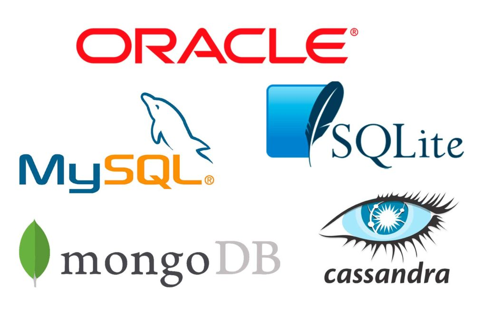

En la década de los 80, las bases de datos se convirtieron en una parte
integral de la informática empresarial. Los sistemas de bases de datos se
volvieron más sofisticados y comenzaron a incluir características como la
recuperación ante desastres y la replicación.
Las bases de datos relacionales se utilizaron en una amplia variedad de
industrias, incluyendo la banca, la manufactura y el comercio minorista.

EMRPESAS DE BASES MÁS
IMPORTANTES DESDE 1970 A 1980
• IBM es una empresa que trabaja en el poder de la automatización y la Inteligencia Artificial (IA).
Algunos beneficios de esta combinación son: Mayor velocidad y escalabilidad de trabajo. Identificación de las oportunidades
antes no previstas para obtener el mayor impacto.
• Oracle Corporation: fundada en 1977, Oracle se convirtió en una de las
empresas de bases de datos más grandes del mundo en la década de los 90.
• Microsoft: Microsoft Corporation es una corporación tecnológica multinacional estadounidense con sede en Redmond,
Washington.
• Sybase: fundada en 1984, Sybase se convirtió en una empresa líder en el
mercado de bases de datos relacionales en la década de los 90.
• Informix: fundada en 1980, Informix se convirtió en una empresa líder en el
mercado de bases de datos relacionales en la década de los 90.